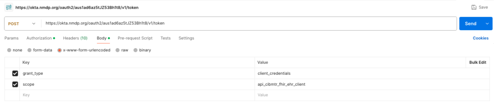

CIBMTR Reporting Implementation Guide
0.1.12 - Trial Use 1
CIBMTR Reporting Implementation Guide
0.1.12 - Trial Use 1
This page is part of the CIBMTR Reporting Implementation Guide (v0.1.12: Release) based on FHIR (HL7® FHIR® Standard) R4. This is the current published version. For a full list of available versions, see the Directory of published versions
A CIBMTR relationship manager or technical lead can initiate a request for API credentials. CIBMTR uses OAuth2.0/OpenID (OIDC) for authentication and access management. This process involves making a request to a third-party authorization server to receive a token. The token is then passed to the CIBMTR API URL in the request header. The following information will be provided by CIBMTR and is necessary for requesting an authorization token :
New sets of credentials will be provided for the CIBMTR test and production environments, if neccessary.
To request an authentication token for any of the test environments, the third-party authorization server URL is:
POST https://oktapreview.nmdp.org/oauth2/aus2gkqgfiffGB4VY0h8/v1/token
To request an authentication token for the production environment, the third-party authorization server URL is:
POST https://okta.nmdp.org/oauth2/aus1ad6az5tJZ53Bh1t8/v1/token
The authorization header for the POST request to the authorization server is automatically generated from the Application Client ID and Application Client Secret.
Note: The Application Client ID and Application Secret are different in the production and test environments and are specific to the CIBMTR Service Account.
An example of a POST request to the authorization server using the Postman API client tool is shown in Figure 1. Under the Authorization tab, select Basic Auth and enter the Application Client ID and Application Client Secret. The authorization header is automatically generated from these credentials when the request is sent.

Figure 2 shows the required fields in the body of the POST request to the authorization server. The grant_type value is client_credentials, and the scope value is the scope provided for the application.

The response to the POST request returns a JSON object containing an access token. Once the access token has been received, it can be used to make requests to the CIBMTR Direct FHIR Backend API. Applications SHOULD cache and reuse the access token until it is about to expire rather than requesting a new token for each API request. The token expiration information is provided in the authorization server response.
To make a request to the CIBMTR Direct FHIR Backend API, include the access token in the request authorization header as a Bearer token by prefixing the token with Bearer .
Access tokens used for the CIBMTR Direct FHIR API are valid for a limited duration defined in the token response. The validity period is determined by the expires_in field returned at the time of token issuance (e.g., "expires_in": 1800 indicates a validity of 1800 seconds). The expires_in value should be used to determine token validity and manage when to request a new token.
Token lifetimes can differ between environments. The production environment often enforces shorter expiration periods than non-production environments. As a result, processes that complete successfully in test environments can encounter token expiration in production, even when processing the same data.
For long-running processes, a valid token needs to be used for all requests. If data transmission exceeds the token’s validity period, the token is considered expired, and a new token is required before submitting additional data.
Requesting a new token before the current token expires, based on the expires_in value, helps prevent interruptions during active data transmission.
If requests are submitted using an expired token, the server can reject those requests due to token expiration. In such cases, a new token is required before data submission can resume.
{
"token_type": "Bearer",
"expires_in": 86400,
"access_token": "jwt-type-token",
"scope": "your-scope-for-the-app"
}